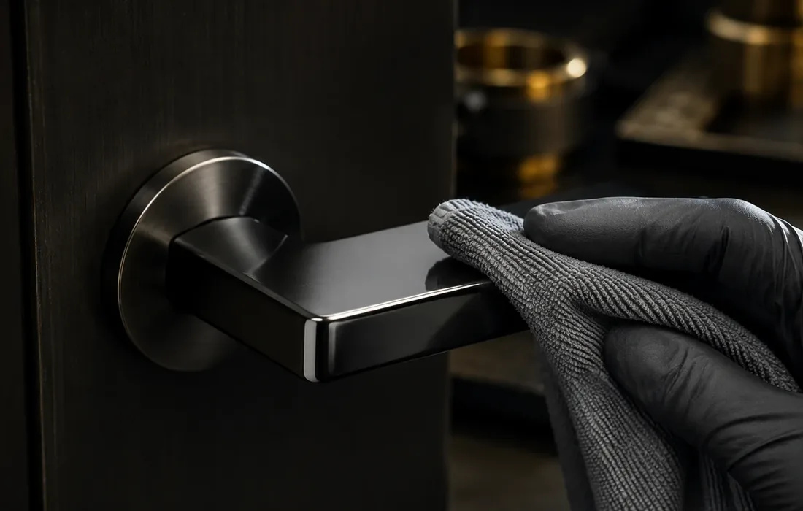

هدف سطح را مشخص کنید
- آینهای، ساتن، براش یا آمادهسازی پوشش
- جنس قطعه
- وضعیت خراش، موج یا عیب فعلی
پرداختکاری برای رسیدن به بافت/بازتاب هدف یا آمادهسازی پیش از پوشش؛ میزان اصلاح ممکن به جنس، هندسه، ضخامت و عمق عیوب قطعه وابسته است.
هدف سطح باید قبل از انتخاب مسیر پولیش مشخص شود؛ آینهای یا ساتن بودن فقط یک بخش از تصمیم است و محدودیت برداشت ماده هم اهمیت دارد.
این ماتریس برای مرتبکردن اطلاعات اولیه است؛ مسیر نهایی بعد از بررسی قطعه و نیاز پروژه مشخص میشود.
ارسال مشخصات پروژهپرداخت سطح برای حذف خطوخش، یکنواختی و آمادهسازی قبل از پوشش یا آبکاری.
براقیت بالا و سطح آینهای برای قطعات لوکس و دکوراتیو.
فینیش کنترلشده برای کاهش انعکاس و اثر انگشت در قطعات پرتردد.
چربیگیری، زیرسازی و آمادهسازی برای چسبندگی بهتر پوشش PVD یا آبکاری.

آینهای، ساتن یا آمادهسازی پیش از پوشش، مسیر یکسانی ندارند؛ هندسه قطعه و عمق عیب تعیین میکند چه نتیجهای واقعبینانه است.
هرچه مشخصات اولیه کاملتر باشد، بررسی فنی، انتخاب مسیر پوشش و برآورد زمان و هزینه با رفتوبرگشت کمتری انجام میشود.
کیفیت پرداخت و تمیزی سطح میتواند روی یکنواختی فینیش و عملکرد لایه بعدی اثر بگذارد. خطوخش، آلودگی یا عیب عمیق ممکن است پس از پوشش نمایانتر شود و باید پیش از اجرا ارزیابی شود.
بسته به جنس و شکل قطعه میتوان فینیش آینهای (Mirror)، ساتن (Satin)، براش (Brushed) یا مات کنترلشده اجرا کرد. انتخاب فینیش به کاربرد و میزان تماس دست بستگی دارد.
جنس قطعه، تعداد، ابعاد/سطح تقریبی، فینیش مطلوب (آینهای/ساتن/براش)، وضعیت فعلی سطح و چند عکس از قطعه. در پروژههای حساس، نمونهسازی پیشنهاد میشود.
برای تصمیمگیری سریعتر، این مقالهها و راهنماها را ببینید.
استعلام بر اساس قطعه واقعی، وضعیت سطح، تیراژ و مسیر فرایند همان پروژه جمعبندی میشود. برای بررسی فنی از Project Brief استفاده کنید و اگر عکس یا مرجع فینیش سریعتر مسئله را روشن میکند، آن را در واتساپ بفرستید.
جنس، وضعیت فعلی سطح، ابعاد، تیراژ و فینیش هدف مبنای بررسی اولیهاند.
در صورت نیاز، عکس واضح قطعه یا نمونه فینیش را از طریق واتساپ ارسال کنید.
شنبه تا چهارشنبه ۷–۱۷ · پنجشنبه ۷–۱۳.